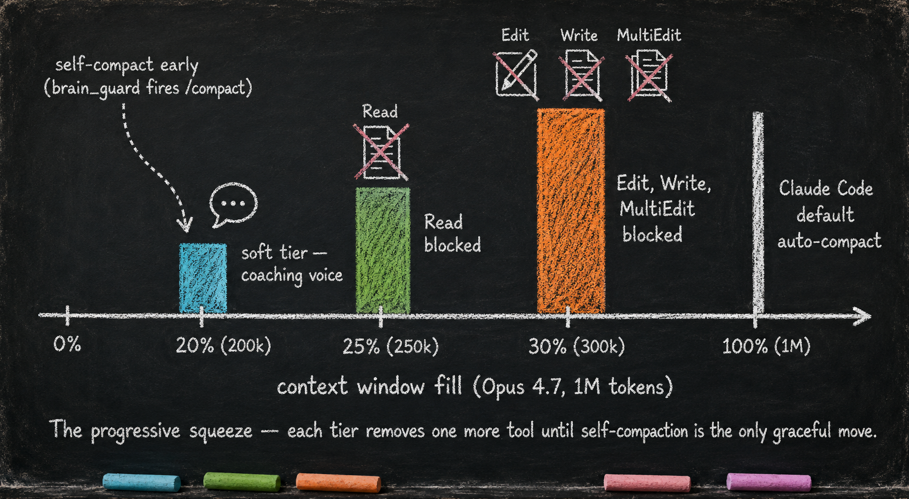

Context Window Discipline — brain_guard
Essay 5.3 — The Always-On Digital Cortex, Part 3 of 9.
Essay 5.2 covered the floor — the test gate that makes every plugin code change conditional. This part covers the ceiling: the always-on plugin that owns the seed agent’s relationship to the model’s context window.
What it owns
brain_guard is the always-on plugin that owns the compaction discipline — the compaction file plus the clear-and-inject operation that replaces native /compact. It works by watching context usage on every tool call and progressively tightening the agent’s grip on tools as the window fills. The whole mechanism fires well before Claude Code’s default auto-compact at 100%, which lets the seed agent operate even when the user is away from the terminal. ⓘ
The compaction file — the thing that survives the clear
Compacting a conversation is destructive. The chat shrinks, and whatever was only in the chat is gone. So the first question brain_guard answers is not when to compact but what must survive the compaction — and the answer is a file.
For each job, brain_guard maintains a compaction file: a per-job, per-session document that carries the cognition about a job, separate from the work itself. The work lives where it always lived — in the CLAUDE.md hierarchy and on disk. The compaction file holds the other thing: how the work is going. Open threads. Assumptions the agent is leaning on. Loops it got stuck in. Fallacies and blind spots it should not repeat. Plus, in a rolling summary section, the top-level facts and principles the next session needs to resume thinking, not just to re-read state. ⓘ
The deeper purpose is sharper than survival. The file forces the seed agent to spend compute not only doing the job but optimizing how it does the job. At each phase’s exit, the agent reviews how its own instructing layer — the coaching voices, the per-job injections — actually steered the work. If a voice injection sent the work down a wrong path, that finding lands in the compaction file, where a later run can read it and re-tune the injection. The file is a node in the seed agent’s self-improvement loop for its own instructions. How each phase actually compels that reflection before it can advance is the phase layer’s job — the Essay 6 series covers the per-phase reflection gate. ⓘ
It is built gradually, never condensed. The file is born from a template at session start and grows as each phase exits, appending to its sections. It is the one managed file CONDENSE never metabolizes — its size is held in check by a sealing pass, not by deflation. ⓘ
Two distinct events touch the file, and they should not be confused. A phase-exit append is the frequent one: every phase, on its way out, writes its slice into the file. A full compaction event is the rare one, threshold-triggered — when a context ramp or a file-size ramp hits its ceiling, the tools progressively block, the finalization pass seals the file, and the session clears and re-injects. The append happens at every phase boundary; the compaction event can fire mid-phase, the moment a ramp tops out, not only at a phase exit.
How it works — the progressive squeeze
A pre-call sensor reads the running token count on every tool call. At the first tier (currently around 20% of the window), the plugin injects a coaching voice prompting the agent to bring its compaction file up to date before the squeeze tightens. The reasoning behind 20% is empirical and prototype-specific: in this 1M-token Opus setup, long-run reasoning starts to soften well before the nominal window is full, so acting at 20% leaves headroom before the prototype’s 30% hard tier. If the agent ignores the prompt, the next tier (around 25%) starts blocking the agent’s read tools. The hardest tier (around 30%) adds the write tools to the block list. ⓘ
The tier positions are tunable; the architectural fact is the progressive tightening. Rather than letting the agent drift toward a hard wall, brain_guard removes one tool at a time until the only graceful move left is to seal-and-clear. The tightening is friction, not a hard lock — it works because the agent reads and follows the injected coaching, and a deliberate operator override always remains. ⓘ
There is a second ramp running alongside the first, and it watches a different gauge. The context ramp watches the model’s window. The file-size ramp watches the compaction file itself — because the cognition can outgrow its own home long before the window fills. It uses the same graduated shape, keyed on a target word ceiling (θ_lc, roughly 2,000 words by default): around 70% of the ceiling fires a coaching voice, around 85% blocks the first band of tools, and 100% is the wall. The two ramps are deliberately symmetric, so neither trigger surprises the other. ⓘ
Whichever ramp reaches its ceiling first triggers the same move — but the ceiling does not fire the compaction on its own. It narrows the toolset down to three actions and lets the agent pull the trigger: a polish edit of the compaction file, a summary append, and the clear-and-inject command itself. New agent dispatch is blocked, because a returning subagent would just re-inflate context and defeat the seal. The session holds in that narrow band until the agent seals the file and clears the conversation. ⓘ

Shape compels production
The compaction file is shape-enforced. It carries a fixed set of sections — Forward State, Open Threads, Assumptions & Risks, Process Insight, and a rolling Prior Summary — and each phase-exit note is routed into the section it belongs in. Scope boundaries and binding user directives go to Forward State. Uncovered sources, deviations, and gotchas go to Open Threads. What verification might have missed goes to Assumptions & Risks. Why-this-over-that and cycle lessons go to Process Insight. Beside those five authored sections sits one more — Git Commit Messages — that the agent never writes by hand: every phase commit’s message is appended into it automatically, giving the next session a ground-truth trail of what changed without re-reading the full diff. ⓘ
The sections aren’t gospel. The shape is.
Call this shape compels production: a compartment that demands a structured shape forces the agent to produce content that fits the shape, and the production itself becomes useful context. The agent thinks more carefully about its own cognition because it has to write under headers — it cannot stack words in the easy section and skip the hard one. ⓘ
The pattern is portable. Structured git commits, structured plan files, structured subagent dispatches — every time a shape demands content, the content rewards the next step. A consultant could use the same trick on weekly client briefs — a fixed five-section template (scope, open questions, decisions taken, evidence, next checkpoint) forces the substantive thinking the prose would otherwise skip. The same trick lands in interaction_summary (Essay 5.5). ⓘ
Clear and inject
When a ramp hits its ceiling, brain_guard runs a finalization pass — an ordered, inspectable sequence that seals the compaction file — and then clears the session and injects the sealed file into the fresh one. The whole design is built for transparency: the finalization pass, the sealed file, and the Prior Summary are all on disk, so the agent can read and check exactly what will carry across the boundary before the session ever clears. Nothing is summarized in the dark; the cognition that survives is the cognition the agent deliberately sealed. ⓘ
The finalization pass is a quality gate, not a summarizer — it invents no new prose. It is phase-indifferent: it seals whatever cognition the file already holds and never waits on the phase’s reflection gate — compaction is a context-management event, the phase’s reflection is a separate phase-transition event. It dedups and folds redundant entries, organizes the sections, then polish-shrinks the body — aiming to fold it below the seal target, with the hard rule that the seal fails only if the file is still at or above the block band. That floor guarantees the sealed file is never born too large to use: the fresh session that inherits it can always read it, even when it resumes a read-only phase. Finally it bumps the file’s version, stamps it, writes the rolling Prior Summary, and seals. Only then does the clear fire. ⓘ
The injection rides a hacky-but-honest carrier: clipboard-and-keystroke input under X11, or terminal-multiplexer paste primitives under tmux, picked by one selector. The payload it delivers is /clear followed by the sealed compaction file — the keystrokes end the saturated session and hand the fresh one exactly the cognition the finalization pass sealed. If Claude Code ever ships a native API for an agent to manage its own session boundary, this terminal-typing layer retires; the rest of the discipline carries forward unchanged. ⓘ
There is one more move, and it leans on the whole point of the seed agent: the mind lives on disk. After the clear, the conversation has shrunk to nothing, but the focused job, the current phase, and the working memory all survived — they were never in the chat to begin with, and now the sealed compaction file rides in alongside them. So the moment the fresh session is born, the digital cortex re-grounds itself: it resets its context-fill tracking, reads the focused job and the live phase straight off disk, and re-presents the same phase-entry coaching the agent heard when it first entered that phase. Because the re-grounding hangs on the /clear session boundary, the reset is direct and deterministic — a fresh session is unambiguously fresh, so the context-fill tracking resets cleanly with no waiting and no guesswork. A clean boundary is self-announcing: the digital cortex knows the exact instant it is born and re-grounds on the spot, with no grace window to wait out and no detector watching for a boundary it has to infer. The keystroke follow-up still kicks off the first turn; a reflex that fires on session birth can hand the agent its bearings, but it cannot make the agent start talking. That division is deliberate: the re-grounding is automatic and certain, so even if the follow-up keystroke mis-fires, the fresh session already carries its own orientation. ⓘ
The ceiling is not the only thing that triggers a clear-and-inject. Two other moments fire the same boundary. The first is job completion: when the seed agent finishes a job, a required seal runs before the job can close — the same finalization pass wraps the finished job’s cognition into its directory, then the boundary clears and injects only a transition note, the sealed Prior Summary, never the full old file and never a fresh template. The next job is not focused yet, so there is nothing to start fresh; the job that defines a compaction file is the one that creates it, at its own focus. A job never ends with an unsealed compaction file — the advance that closes it checks for the seal stamp before it fires. ⓘ
The second is focus itself. Picking up a job from idle is a clear-and-inject too: focusing a job whose compaction file already exists — a return after a pause, a reactivated run — clears the session and injects that file, the reload path; focusing a job with no file yet creates it from the template and injects that, a clean cognitive start that sheds the prior job’s residue. Two edges are deliberately carved out. A prompt that bootstraps a job — a user prompt that creates a fresh focused job — does not clear, because the user’s live prompt thread is already the job’s opening cognition and there is no stale residue to shed. And pausing a job does not seal: the live file stays with the job, and the metacognition written since the last phase exit is the bounded loss of a mid-phase pause — the work itself is safe on disk in the CLAUDE.md layer. ⓘ
And because each session opens carrying the last sealed file plus a single rolling Prior Summary, the chain can run for an unbounded number of sessions at a fixed cost. The recent file describes the current session; the Prior Summary — held at a fixed slice of the file’s budget — folds in everything before it. Session thirty still knows what session two learned, without ever injecting all thirty. ⓘ
What would break without it
Without brain_guard, the agent runs the conversation off a cliff — and the cliff is steeper than it looks. The default 100% auto-compact fires eventually, but the thing it loses is not just the window. It loses the cognition: the open threads, the assumptions, the loops the agent had learned to avoid, the read on how the instructing layer was steering the work. The default compaction keeps whatever scraps the model happened to have in the window at that moment and discards the rest. The next session does not resume thinking; it starts over from facts. ⓘ
What you would customize
brain_guard is the plugin most architects tune the moment they adopt the seed. Almost every knob has a defensible reason to move.
You would tune the tier positions for your model and your context budget. The 20% / 25% / 30% values map to Opus 4.8's 1M token window — they encode this prototype’s empirical operating curve rather than a universal model law. Your seed may run on a different model with a different effective-reasoning curve; the tier thresholds should track wherever that curve actually bends for the model you use. Sonnet’s window is smaller; Haiku’s smaller still; a future model with cleaner long-context behavior may not need the 25% tier at all. ⓘ
You would customize the compaction file’s sections. The five sections name what this prototype values — Forward State, Open Threads, Assumptions & Risks, Process Insight, Prior Summary. Your seed may need different sections for your kind of work: a legal-research seed may want a "citation-state" section; a project-management seed may want a "decision-log" section. The five names aren’t gospel. The shape is. ⓘ
You would tune θ_lc, the compaction file’s target size, and the ramp positions that key off it. Two thousand words is this prototype’s ceiling; a seed running denser, longer jobs may want more headroom, and a seed running short, hot cycles may want less. The coaching-band and block-band positions on that ramp move the same way the context tiers do — wherever your kind of work needs the seal to start being forced. ⓘ
You would tune the metacognition requirement — how many reflection steps each phase must run before it can move on. More steps means more compute spent optimizing how the work is done; fewer means more compute spent on the work itself. That dial is how an operator decides how hard their seed thinks about its own thinking. ⓘ
You would choose your dispatch mechanism. The current prototype ships two paths — X11 keyboard injection and tmux paste-buffer — and the same carrier delivers the clear-and-inject payload. Your environment may need a third (an SSH-bridge variant, a Windows Terminal handler). If Claude Code ships a native API for an agent to manage its own session boundary, you drop the keyboard-injection layer entirely without touching the rest of the plugin. ⓘ
You would add or split tiers. Three tiers is the current shape; nothing in the architecture forbids four or five. A high-stakes seed may want an extra tier between 25% and 30% that blocks Bash before write tools. A seed working in shorter, hotter cycles may collapse the soft tier and start blocking immediately at 22%. ⓘ
What you would not do is remove the progressive-tightening principle. Letting the agent drift toward the 100% wall, then surprise-compacting at the worst moment, is exactly the failure mode brain_guard was built to prevent.
The next part covers the plugin that gives the seed agent a notion of what work it is doing — the unit of compartmentalization, the dynamic mega-prompt, the refusal to stop while jobs remain.
Essay 5.3 — The Always-On Digital Cortex, Part 3 of 9.
Previous: Essay 5.2 — Plugin Edit Safety — plugin_integrity — the test gate underneath every plugin edit. Next: Essay 5.4 — Job Lifecycle — job_core — the agent’s unit of compartmentalization and the refusal-to-stop discipline.
Comments